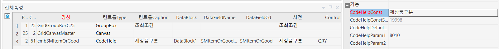

제상품구분 추가
cmbSMItemOrGood CodeHelp 제상품구분 DataBlock1 SMItemOrGoodName SMItemOrGood
제상품구분
19998
8010
TextBox 제상품구분 DataBlock1 SMItemOrGoodName DIS; 100
FloatBox 제상품구분코드 DataBlock1 SMItemOrGood DIS;HID; 100

,@SMItemOrGood INT -- 제상품구분 추가 / 시스템코드(8010)-제상품구분 25.12.17 SJPARK
,IIF(ISNULL(S1.MinorValue,0) = 1 ,'자재' ,'제상품') AS SMItemOrGoodName
,IIF(ISNULL(S1.MinorValue,0) = 1 ,8010002 ,8010001 ) AS SMItemOrGood
-- 셀바스 추가 25.12.17 SJPARK
AND ( @SMItemOrGood = 0
OR (@SMItemOrGood = 8010001 AND ISNULL(S1.MinorValue,0) \<> 1 ) -- 제상품
OR (@SMItemOrGood = 8010002 AND ISNULL(S1.MinorValue,0) = 1 ) -- 자재
)